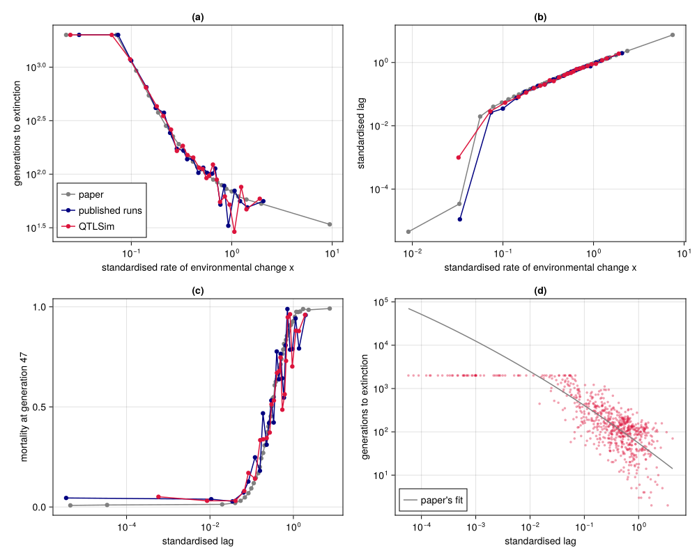
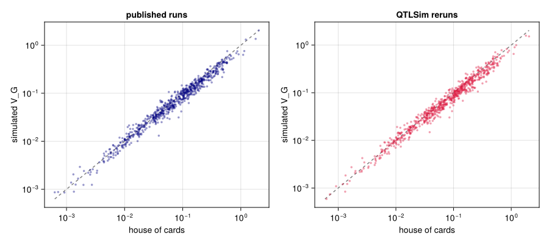
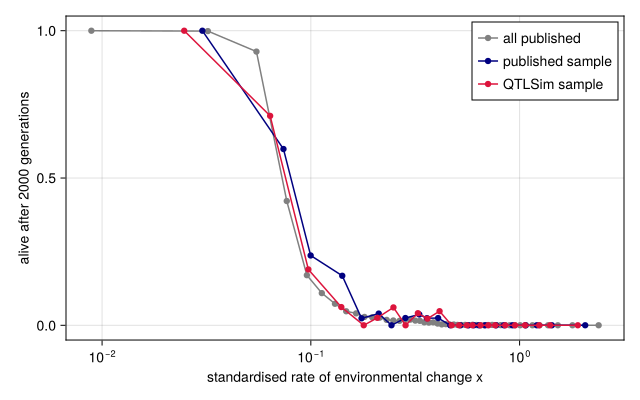

Replicating Pagel, Gardner and Meade (2025)
Simon Frost
- Overview
- Setup
- The paper’s results, recomputed
- Rerunning a sample with QTLSim
- Population by population
- Table 2
- Figure 1
- Genetic variance at equilibrium
- How fast is too fast
- Survivors
- Summary
Overview
Pagel, Gardner and Meade (Pagel et al. 2025) simulated 119,984 populations with QTSim, in eight strata of about 15,000: 100, 500, 1000 or 5000 loci, with a mean of three or five crossover points per gamete. Each population had 1000 diploid individuals and its own phenotypic variance, heritability, mutation scalar, fitness width and rate of environmental change, drawn from the priors in the paper’s Table 1. It spent 10,000 generations under stabilising selection; then its optimum moved by a fixed amount every generation until it went extinct or 240,000 generations had passed. From these runs the paper reports how long populations survive and how fast they change (its Table 2), how survival, lag and mortality depend on the rate of environmental change (its Figure 1), a maximum sustainable rate of about 3% of a phenotypic standard deviation per generation, and a comparison with rates measured in the field.
This vignette replicates those results in two steps. It first recomputes the paper’s numbers from the paper’s own per-run results table, which pins down exactly how each is defined. It then reruns a stratified random sample of 710 of the paper’s populations with QTLSim, measures them in the same way, and compares them with the published runs of the same populations and with the paper’s full results.
Three things differ from the paper. Each rerun stops 2000 generations after the optimum starts to move, rather than 240,000, unless the population is still alive then: most populations are dead by then, and comparisons of the 2000-generation reruns with the published runs are made at the same horizon. The populations still alive are run on to 240,000 generations for the paper’s statistics of the survivors. The sample takes 125 populations from each stratum with 100 or 500 loci, 75 with 1000 and 30 with 5000, where runs are slowest, and weights every stratum equally when pooling, as the paper’s equal-sized strata do. And the reruns use QTLSim’s own random numbers, so each one is a new realisation of the same population, not a copy of the published run.
The results tables come with the paper’s code and data, not with this package. The vignette looks for them in a Repository/Results folder next to the package’s folder.
Setup
using QTLSim
using CairoMakie, DelimitedFiles, Distributions, Printf, Random, Statistics, XLSX
CairoMakie.activate!(type = "png")
const PKG = normpath(joinpath(@__DIR__, "..", ".."))
const RESULTS = normpath(joinpath(PKG, "..", "Repository", "Results"))
const MASTER = joinpath(RESULTS, "Master Output file.xlsx")
const FIGDATA = joinpath(RESULTS, "Figures 1-2 and SI Figures 1-3 data.xlsx")
const CACHE = joinpath(@__DIR__, "replication_runs.csv")
const SURVIVOR_CACHE = joinpath(@__DIR__, "survivor_runs.csv")
isfile(MASTER) || error("this vignette needs the paper's results tables in $RESULTS")
Threads.nthreads()6The paper’s results, recomputed
The paper’s results table has one row per population: its parameters and the measures computed from its run. We read the columns used here.
const MOVE_GEN = 10_000 # generations of stabilising selection before the optimum starts to move
const CAP = 2_000 # generations of directional selection simulated (the paper ran up to 240 000)
const POP = 1000
# populations rerun from each stratum (each locus count and recombination rate): fewer
# where runs are slow; pooled statistics weight every stratum equally, as in the paper
const SAMPLE_SIZE = Dict(100 => 125, 500 => 125, 1000 => 75, 5000 => 30)
"Read the columns used here from the paper's per-run results table."
function read_master(path)
dt = XLSX.readtable(path, "Master output file")
lab = strip.(string.(dt.column_labels))
num(v) = v isa AbstractString ? parse(Float64, v) : v === missing ? NaN : Float64(v)
f(name) = num.(dt.data[findfirst(==(name), lab)])
(; L = round.(Int, f("No. Loci")), u = f("recombination u=3,5"), h2 = f("Heritability"),
VP = f("PhenotypeVar"), m = f("MutationScalar Vm/Ve"), d = f("d_env"), ω = f("w, fitness function sd"),
T = f("Generations to extinction"), T50 = f("Generations to 50% mortality"),
sd50 = f("Phenotype SD at 50% mortality"), x = f("d_env/trait sd at 50% mortality"),
rate_ext = f("Standardised phenotypic change to extinction"),
rate50 = f("standardised phenotypic change to 50% mortality"), lag = f("standardised lag"),
P47 = f("P Survived at generation 10047"), VG = f("Genotype Var at 10000"),
shc = f("Burger Vg(SHC) eq 21a"), kc = f("standardised kc"),
adjusted = f("mutation adjusted standardised change"), survived = f("Extinct (0,1)") .== 1)
end
t = read_master(MASTER)
@printf("%d populations, %d of which survived all 240,000 generations\n", length(t.L), count(t.survived))119984 populations, 6158 of which survived all 240,000 generationsThe paper’s Table 2 summarises the populations by medians and interquartile ranges. The rate of phenotypic change is how far the mean phenotype moved per generation, until extinction or until 50% mortality, in units of the phenotypic standard deviation at 50% mortality; Adaptation to a moving optimum defines each measure. The quantiles below are weighted, which matters for the sample later; for the full table every weight is one.
function wquantile(v, w, p)
o = sortperm(v); c = cumsum(w[o])
v[o[searchsortedfirst(c, p * c[end])]]
end
function iqr(v, w = ones(length(v)))
ok = isfinite.(v)
@sprintf("%.3g (%.3g–%.3g)", (wquantile(v[ok], w[ok], p) for p in (0.5, 0.25, 0.75))...)
end
println("| quantity | paper | recomputed from the table |\n|:--|:--|:--|")
for (name, paper, v) in (
("generations to extinction, all populations", "141 (79–326)", t.T),
("generations to 50% mortality, all populations", "47 (25–113)", t.T50),
("rate of phenotypic change to extinction, all populations", "0.056 (0.030–0.103)", t.rate_ext),
("rate of phenotypic change to 50% mortality, all populations", "0.033 (0.017–0.058)", t.rate50),
("rate of phenotypic change, survivors", "0.031 (0.011–0.066)", t.rate_ext[t.survived]),
("critical rate k_c, survivors", "0.022 (0.008–0.056)", t.kc[t.survived]))
println("| ", name, " | ", paper, " | ", iqr(v), " |")
end| quantity | paper | recomputed from the table |
|---|---|---|
| generations to extinction, all populations | 141 (79–326) | 141 (79–326) |
| generations to 50% mortality, all populations | 47 (25–113) | 47 (25–113) |
| rate of phenotypic change to extinction, all populations | 0.056 (0.030–0.103) | 0.0564 (0.0302–0.103) |
| rate of phenotypic change to 50% mortality, all populations | 0.033 (0.017–0.058) | 0.0327 (0.017–0.058) |
| rate of phenotypic change, survivors | 0.031 (0.011–0.066) | 0.0307 (0.0117–0.0661) |
| critical rate k_c, survivors | 0.022 (0.008–0.056) | 0.0222 (0.00821–0.0559) |
The survivors’ median rate of phenotypic change, about 0.03 standard deviations per generation, is the paper’s estimate of the maximum sustainable rate. The survivors’ mutation scalars are larger than those of the populations as a whole, so the paper also reweights them (its equation 1): each survivor’s rate is multiplied by the density of its mutation scalar under a gamma distribution, relative to the survivors’ mean density. The gamma distribution turns out to be the maximum-likelihood fit to the mutation scalars of all 119,984 populations, and with it the adjustment reproduces the table’s column:
const MGAMMA = fit_mle(Gamma, t.m)
"Rates weighted by the density of their mutation scalars, relative to the (weighted) mean density."
mutation_adjusted(rate, m, w = ones(length(m))) =
rate .* pdf.(MGAMMA, m) ./ (sum(w .* pdf.(MGAMMA, m)) / sum(w))
adj = mutation_adjusted(t.rate_ext[t.survived], t.m[t.survived])
(gamma_shape = shape(MGAMMA), gamma_scale = scale(MGAMMA),
largest_relative_difference = maximum(abs.(adj ./ t.adjusted[t.survived] .- 1)),
median_adjusted = median(adj))(gamma_shape = 1.2010380894230446, gamma_scale = 0.004635457830592143, largest_relative_difference = 6.544547792586286e-9, median_adjusted = 0.019677242570054217)The adjusted median, 0.0197, is the paper’s 0.019.
Figure 1d of the paper fits the time to extinction against the standardised lag, the amount per generation by which a population falls further behind the optimum, with a quadratic in natural logarithms. It reports $\log T = 4.0 - 0.91 \log(\text{lag}) + \dots$ with $R^2 = 0.83$:
function logfit(lag, T, w = ones(length(T)))
ok = (lag .> 0) .& (T .> 0) .& isfinite.(lag)
x = log.(lag[ok]); y = log.(T[ok]); s = sqrt.(w[ok])
X = [ones(length(x)) x x .^ 2]
b = (s .* X) \ (s .* y)
ȳ = sum(w[ok] .* y) / sum(w[ok])
(; intercept = b[1], slope = b[2], quadratic = b[3],
R2 = 1 - sum(w[ok] .* (y - X * b) .^ 2) / sum(w[ok] .* (y .- ȳ) .^ 2), n = count(ok))
end
logfit(t.lag, t.T)(intercept = 3.9991256253251874, slope = -0.9127023301283174, quadratic = -0.018345962516546244, R2 = 0.833178298162401, n = 119801)The field comparison works with the critical rate $k_c$ of the surviving populations, the fastest change theory says each could sustain (Lynch and Lande 1993; Bürger and Lynch 1995). Birds advance their breeding by a median of 0.022 phenotypic standard deviations a year; with a generation time of two to four years that is 0.044 to 0.088 per generation, which the paper places at the 68th and 86th percentiles of $k_c$:
kc = filter(isfinite, t.kc[t.survived])
for rate in (0.044, 0.088)
@printf("%.3f standard deviations per generation is at the %.1fth percentile of k_c (%d survivors)\n",
rate, 100 * mean(kc .<= rate), length(kc))
end0.044 standard deviations per generation is at the 68.3th percentile of k_c (5755 survivors)
0.088 standard deviations per generation is at the 86.2th percentile of k_c (5755 survivors)The critical rate is the paper’s equation 2, Bürger and Lynch’s maximum rate of environmental change a population can sustain. It needs only quantities that every run reports: the genetic variance $\sigma_g^2$ just before the move, the fitness width $\omega$, the environmental variance $V_E$, and the number $n$ of survivors at the table’s generation 10,047, from which the table takes the expected number of offspring per surviving parent $N_0 = N(2n-3)/(2n(n-2))$, the variance in offspring number $V_k = 2N_0(1 - 2N_0/N)$ and Falconer’s effective size $N_e = 4N/(V_k + 2)$. With $V_s = \omega^2 + V_E$, $V_\lambda = V_s + \sigma_g^2 + V_s/(2N_e)$ and $B_0 = N_0\,\omega/\sqrt{V_\lambda}$, the table’s column is
\[k_c = \frac{\sigma_g^2}{\sigma_g^2 + V_s}\sqrt{2 V_\lambda \ln B_0}\]
in units of the phenotypic standard deviation at 50% mortality, where $B_0 > 1$. The equation as printed has no factor of 2 and has $V_s + \sigma_g^2$ in place of $V_\lambda$; the table’s form, which gives the paper’s numbers, is Bürger and Lynch’s (Bürger and Lynch 1995). This function reproduces the column:
# Bürger and Lynch's critical rate k_c, as the paper's results table computes it, in units of
# the phenotypic standard deviation `sd50` at 50% mortality; `n` is the number of survivors
# at the table's generation 10,047 and `VG` the genetic variance just before the move.
function critical_rate(; n, VG, ω, VE, sd50, N = POP)
n >= 3 || return NaN
No = N * (2n - 3) / (2n * (n - 2)) # offspring per surviving parent
Vk = 2No * (1 - 2No / N) # variance in offspring number
Ne = 4N / (Vk + 2) # Falconer's effective size
Vs = ω^2 + VE
Vλ = Vs + VG + Vs / (2Ne)
B0 = No * ω / sqrt(Vλ)
B0 > 1 ? VG / (VG + Vs) * sqrt(2Vλ * log(B0)) / sd50 : NaN
end
kc_recomputed = [critical_rate(n = t.P47[i], VG = t.VG[i], ω = t.ω[i], VE = (1 - t.h2[i]) * t.VP[i],
sd50 = t.sd50[i]) for i in eachindex(t.L)]
ok = isfinite.(t.kc)
(defined_where_the_table_is = isfinite.(kc_recomputed) == ok,
largest_relative_difference = maximum(abs.(kc_recomputed[ok] ./ t.kc[ok] .- 1)))(defined_where_the_table_is = true, largest_relative_difference = 8.111256111220655e-11)Rerunning a sample with QTLSim
Each sampled population is simulated with its published parameters: 10,000 generations of stabilising selection, then the optimum moving by its rate $d$ per generation for up to 2000 generations.
"Sample `n[L]` inputs from each stratum, reproducibly."
function stratified_sample(t; n = SAMPLE_SIZE, seed = 2025)
rng = Xoshiro(seed)
rows = Int[]
for L in (100, 500, 1000, 5000), u in (3.0, 5.0)
s = findall(i -> t.L[i] == L && t.u[i] == u, eachindex(t.L))
append!(rows, sort(shuffle(rng, s)[1:n[L]]))
end
rows
end
rows = stratified_sample(t)
length(rows)710The measures follow the conventions of the paper’s results table, which numbers generations from one: its “generation 10,000” is the last generation before the move, and its “generation 10,047”, where it records mortality, is the 45th generation of the move. Applied to QTSim’s own output for published populations, this function reproduces the table’s values exactly.
"""
The paper's per-run measures, with the conventions of its results table: generations
are counted as in the table (the table's 'at 10000' is generation 9999, and its
'generation 10047' is generation 10044), and 50% mortality is the first generation
after the move at which the number of survivors is closest to N/2.
"""
function paper_measures(gen, zbar, sd, ns; d, extinct::Bool, movegen = MOVE_GEN, N = POP)
i0 = findfirst(==(movegen - 1), gen)
post = findall(>=(movegen), gen)
k = isempty(post) ? lastindex(gen) : post[argmin(abs.(ns[post] .- N ÷ 2))]
T = extinct ? gen[end] + 2 - movegen : length(post)
T50 = gen[k] + 2 - movegen
sd50 = sd[k]
x = d / sd50
rate_ext = (zbar[end] - zbar[i0]) / T / sd50
rate50 = (zbar[k] - zbar[i0]) / T50 / sd50
j47 = findfirst(==(movegen + 44), gen)
(; T, extinct, T50, sd50, x, rate_ext, rate50, lag = x - rate_ext,
P47 = j47 === nothing ? NaN : Float64(ns[j47]))
end
"Simulate one published input with QTLSim and measure it."
function replicate_run(t, i; cap = CAP)
p = Params(NoGenerations = MOVE_GEN + cap, Sample = 1, PopSize = POP, Ploidy = 2, NoQTL = t.L[i],
PhenotypeVar = t.VP[i], Heritability = t.h2[i], MutationScalar = t.m[i],
MutationRatePerGamete = 1e-4, RecombPoissonMean = t.u[i], InitFitnessSD = t.ω[i],
MoveFitnessSDGen = MOVE_GEN, MoveFitnessSD = t.d[i], MoveType = :continuous)
o = simulate(p; seed = i)
j = findfirst(==(MOVE_GEN - 1), o.gen)
j === nothing && return nothing # died before the optimum moved
r = paper_measures(o.gen, o.pheno_mean, sqrt.(o.pheno_var), o.nsurv; d = t.d[i], extinct = o.extinct)
(; row = i, L = t.L[i], u = t.u[i], r..., VG = o.geno_var[j], ns_eq = mean(o.nsurv[j-99:j]))
end
const FIELDS = (:row, :L, :u, :T, :extinct, :T50, :sd50, :x, :rate_ext, :rate50, :lag, :P47, :VG, :ns_eq)
function read_runs(path)
a, h = readdlm(path, ',', header = true)
c(f) = a[:, findfirst(==(string(f)), vec(h))]
(; row = Int.(c(:row)), L = Int.(c(:L)), u = Float64.(c(:u)), T = Int.(c(:T)), extinct = Bool.(c(:extinct)),
T50 = Int.(c(:T50)), sd50 = Float64.(c(:sd50)), x = Float64.(c(:x)), rate_ext = Float64.(c(:rate_ext)),
rate50 = Float64.(c(:rate50)), lag = Float64.(c(:lag)), P47 = Float64.(c(:P47)), VG = Float64.(c(:VG)),
ns_eq = Float64.(c(:ns_eq)))
end
"""
Run the sampled inputs on all threads, handing out runs one at a time, longest first.
Each finished run is appended to `cache`, and runs already there are skipped, so an
interrupted replication resumes where it stopped.
"""
function run_replication(t, rows, cache; cap = CAP)
isfile(cache) || open(io -> println(io, join(FIELDS, ',')), cache, "w")
done = countlines(cache) > 1 ? Set(read_runs(cache).row) : Set{Int}()
todo = filter(∉(done), rows)
lk = ReentrantLock()
Threads.@threads :greedy for i in todo[sortperm(t.L[todo]; rev = true)]
r = replicate_run(t, i; cap)
r === nothing && continue
lock(lk) do
open(io -> println(io, join((getfield(r, f) for f in FIELDS), ',')), cache, "a")
end
end
read_runs(cache)
end
nothingThe runs take about an hour on ten threads, mostly for the populations with many loci, so each finished run is stored next to this vignette and read back on later renders. Deleting the file reruns them, and an interrupted replication resumes where it stopped.
runs = run_replication(t, rows, CACHE)
w = [1 / SAMPLE_SIZE[L] for L in runs.L] # every stratum counts equally
@printf("%d runs; they are exactly the sampled populations: %s\n",
length(runs.row), sort(runs.row) == sort(rows))710 runs; they are exactly the sampled populations: trueThe stored results come from the code above: rerunning two of the populations reproduces them exactly.
k = findall(==(100), runs.L)[1:2]
check = [replicate_run(t, runs.row[j]) for j in k]
all(getfield(check[a], f) == getfield(runs, f)[k[a]] for a in 1:2
for f in (:T, :T50, :sd50, :x, :rate_ext, :rate50, :lag, :VG, :ns_eq))truePopulation by population
For each sampled population there are two realisations, the published run and the QTLSim rerun. Their genetic variance just before the optimum moves, and how long they last after it does, should agree on average.
pub(f) = getfield(t, f)[runs.row]
capT(T) = min.(Float64.(T), CAP)
println("| quantity | QTLSim / published | 95% interval |\n|:--|--:|--:|")
for (name, a, b) in (("genetic variance before the move", runs.VG, pub(:VG)),
("generations to extinction, capped at 2000", capT(runs.T), capT(pub(:T))))
ok = (a .> 0) .& (b .> 0)
δ = log.(a[ok]) .- log.(b[ok]); ω = w[ok] ./ sum(w[ok])
m = sum(ω .* δ); se = sqrt(sum(ω .^ 2 .* (δ .- m) .^ 2))
@printf("| %s | %.3f | %.3f–%.3f |\n", name, exp(m), exp(m - 1.96se), exp(m + 1.96se))
end
@printf("\nAlive 2000 generations after the move: QTLSim %.1f%%, published runs %.1f%%.\n",
100 * sum(w .* .!runs.extinct) / sum(w), 100 * sum(w .* (pub(:T) .>= CAP)) / sum(w))| quantity | QTLSim / published | 95% interval |
|---|---|---|
| genetic variance before the move | 0.990 | 0.973–1.007 |
| generations to extinction, capped at 2000 | 0.999 | 0.992–1.006 |
Alive 2000 generations after the move: QTLSim 8.8%, published runs 9.0%.
Table 2
The medians and quartiles of Table 2, three ways: for all 119,984 published populations, for the published runs of the sampled populations, and for their QTLSim reruns. For the two samples, times are capped at 2000 generations, and rates for populations still alive then are measured over those 2000 generations.
println("| quantity | all published | published sample | QTLSim sample |\n|:--|:--|:--|:--|")
for (name, all_pub, s_pub, s_jl) in (
("generations to extinction", t.T, capT(pub(:T)), capT(runs.T)),
("generations to 50% mortality", t.T50, pub(:T50), Float64.(runs.T50)),
("rate of phenotypic change to extinction", t.rate_ext, pub(:rate_ext), runs.rate_ext),
("rate of phenotypic change to 50% mortality", t.rate50, pub(:rate50), runs.rate50),
("standardised rate of environmental change x", t.x, pub(:x), runs.x),
("standardised lag", t.lag, pub(:lag), runs.lag))
println("| ", name, " | ", iqr(all_pub), " | ", iqr(s_pub, w), " | ", iqr(s_jl, w), " |")
end| quantity | all published | published sample | QTLSim sample |
|---|---|---|---|
| generations to extinction | 141 (79–326) | 138 (73–326) | 137 (72–334) |
| generations to 50% mortality | 47 (25–113) | 45 (22–112) | 45 (22–113) |
| rate of phenotypic change to extinction | 0.0564 (0.0302–0.103) | 0.0564 (0.0302–0.105) | 0.0583 (0.0273–0.108) |
| rate of phenotypic change to 50% mortality | 0.0327 (0.017–0.058) | 0.0333 (0.0164–0.063) | 0.033 (0.0149–0.0637) |
| standardised rate of environmental change x | 0.453 (0.231–0.775) | 0.485 (0.227–0.814) | 0.496 (0.237–0.815) |
| standardised lag | 0.349 (0.142–0.671) | 0.37 (0.14–0.675) | 0.372 (0.144–0.69) |
Figure 1
The paper’s Figure 1 bins populations by the standardised rate of environmental change $x$, the rate $d$ in units of the phenotypic standard deviation at 50% mortality, and plots medians per bin. Here the paper’s own binned values, from its figure data, are drawn with the same summaries of the two samples in 24 bins of equal weight.
function binned(x, y, w = ones(length(x)); nbins = 24)
o = sortperm(x); c = cumsum(w[o]) ./ sum(w)
bin = min.(max.(ceil.(Int, c .* nbins), 1), nbins)
[(wquantile(x[o][bin .== b], w[o][bin .== b], 0.5), wquantile(y[o][bin .== b], w[o][bin .== b], 0.5))
for b in 1:nbins if any(==(b), bin)]
end
mortality(P47) = replace(1 .- P47 ./ POP, NaN => 1.0) # dead before generation 47: all died
fig1a = XLSX.readtable(FIGDATA, "Figure 1a,d")
paper1a = sort(unique(collect(zip(Float64.(fig1a.data[1]), Float64.(fig1a.data[3])))))
fig1bc = XLSX.readtable(FIGDATA, "Figures 1b,c")
paper1bc = [Float64.(c) for c in fig1bc.data] # x, lag, mortality: 50 bins
samples = ((pub(:x), capT(pub(:T)), pub(:lag), mortality(pub(:P47)), "published runs", :navy),
(runs.x, capT(runs.T), runs.lag, mortality(runs.P47), "QTLSim", :crimson))
nothingfig = Figure(size = (1000, 800))
ax_a = Axis(fig[1, 1], xscale = log10, yscale = log10, title = "(a)",
xlabel = "standardised rate of environmental change x", ylabel = "generations to extinction")
ax_b = Axis(fig[1, 2], xscale = log10, yscale = log10, title = "(b)",
xlabel = "standardised rate of environmental change x", ylabel = "standardised lag")
ax_c = Axis(fig[2, 1], xscale = log10, title = "(c)", xlabel = "standardised lag",
ylabel = "mortality at generation 47")
ax_d = Axis(fig[2, 2], xscale = log10, yscale = log10, title = "(d)", xlabel = "standardised lag",
ylabel = "generations to extinction")
scatterlines!(ax_a, first.(paper1a), min.(last.(paper1a), CAP), color = :gray, label = "paper")
ok = paper1bc[2] .> 0
scatterlines!(ax_b, paper1bc[1][ok], paper1bc[2][ok], color = :gray)
scatterlines!(ax_c, paper1bc[2][ok], paper1bc[3][ok], color = :gray)
for (x, T, lag, mort, name, c) in samples
scatterlines!(ax_a, binned(x, T, w), color = c, label = name)
pos = lag .> 0
scatterlines!(ax_b, binned(x[pos], lag[pos], w[pos]), color = c)
scatterlines!(ax_c, binned(lag[pos], mort[pos], w[pos]), color = c)
end
pos = runs.lag .> 0
scatter!(ax_d, runs.lag[pos], capT(runs.T)[pos], color = (:crimson, 0.4), markersize = 5)
ℓ = exp.(range(log(minimum(runs.lag[pos])), log(maximum(runs.lag[pos])), length = 100))
fitp = logfit(t.lag, t.T)
lines!(ax_d, ℓ, min.(exp.(fitp.intercept .+ fitp.slope .* log.(ℓ) .+ fitp.quadratic .* log.(ℓ) .^ 2), 2.4e5),
color = :gray, label = "paper's fit")
axislegend(ax_a, position = :lb)
axislegend(ax_d, position = :lb)
fig
Figure 1: Figure 1 of the paper (gray, from its figure data) with the same summaries of the sampled populations: their published runs (navy) and their QTLSim reruns (crimson). (a) Median generations to extinction against the standardised rate of environmental change; medians above 2000 generations are drawn at 2000, the length of the reruns. (b) Median standardised lag. (c) Median mortality at generation 47 against the median lag. (d) Generations to extinction against standardised lag for the QTLSim reruns, with the paper’s fitted curve.
The QTLSim reruns (crimson) and the published runs of the same populations (navy) lie on the paper’s curves (gray) in every panel. Populations facing change slower than about 0.07 phenotypic standard deviations per generation mostly outlast the 2000 generations of the reruns, so their median is drawn at the cap; beyond that the time to extinction falls steeply, to about a hundred generations at half a standard deviation per generation. The lag grows in proportion to the rate of change, and mortality at generation 47 rises from almost none at lags of a few hundredths of a standard deviation per generation to about half at a lag of 0.2 and nearly all at a lag of 1.
The quadratic fit of Figure 1d, made to the two samples with times capped at 2000:
println("| fit | intercept | slope | quadratic | R² | populations |\n|:--|--:|--:|--:|--:|--:|")
for (name, f) in (("paper (all populations, uncapped)", logfit(t.lag, t.T)),
("published runs of the sample, capped", logfit(pub(:lag), capT(pub(:T)), w)),
("QTLSim reruns of the sample, capped", logfit(runs.lag, capT(runs.T), w)))
@printf("| %s | %.2f | %.3f | %.4f | %.2f | %d |\n", name, f.intercept, f.slope, f.quadratic, f.R2, f.n)
end| fit | intercept | slope | quadratic | R² | populations |
|---|---|---|---|---|---|
| paper (all populations, uncapped) | 4.00 | -0.913 | -0.0183 | 0.83 | 119801 |
| published runs of the sample, capped | 4.06 | -0.863 | -0.0451 | 0.60 | 709 |
| QTLSim reruns of the sample, capped | 4.04 | -0.912 | -0.0544 | 0.61 | 707 |
Capped at 2000 generations, the published runs and the QTLSim reruns give almost the same fit. Both differ from the paper’s fit to uncapped times: the cap flattens the times of the longest-lived populations, which lowers $R^2$ to about 0.6.
Genetic variance at equilibrium
The paper checks its populations’ genetic variance at the end of the stabilising phase against Bürger’s stochastic house-of-cards approximation (Bürger et al. 1989) (its Supplementary Figure S1; see Mutation–selection balance). The same check for the reruns, with the effective population size computed from each rerun’s own number of survivors:
function house_of_cards(i, ns)
N, n, μ = POP, t.L[i], 1e-4
VE = (1 - t.h2[i]) * t.VP[i]
Vs = t.ω[i]^2 + VE
α2 = t.m[i] * VE / (2n * μ)
Ne = 4N / (2N * (ns - 1) / ns^2 + 2)
4n * μ * Vs / (1 + Vs / (Ne * α2))
end
shc_jl = [house_of_cards(i, ns) for (i, ns) in zip(runs.row, runs.ns_eq)]
@printf("median V_G / house of cards: published runs %.2f, QTLSim reruns %.2f\n",
wquantile(pub(:VG) ./ pub(:shc), w, 0.5), wquantile(runs.VG ./ shc_jl, w, 0.5))median V_G / house of cards: published runs 0.90, QTLSim reruns 0.89fig = Figure(size = (900, 400))
for (k, (pred, obs, name, c)) in enumerate(((pub(:shc), pub(:VG), "published runs", :navy),
(shc_jl, runs.VG, "QTLSim reruns", :crimson)))
ax = Axis(fig[1, k], xscale = log10, yscale = log10, title = name,
xlabel = "house of cards", ylabel = "simulated V_G")
ok = (pred .> 0) .& (obs .> 0)
lo, hi = extrema(vcat(pred[ok], obs[ok]))
lines!(ax, [lo, hi], [lo, hi], color = :gray, linestyle = :dash)
scatter!(ax, pred[ok], obs[ok], color = (c, 0.4), markersize = 5)
end
fig
Figure 2: Genetic variance just before the optimum moves against the stochastic house-of-cards approximation, for the published runs (left) and the QTLSim reruns (right) of the sampled populations. The line is equality.
How fast is too fast
Which populations survive depends above all on the standardised rate of environmental change. The fraction still alive 2000 generations after the move, in bins of $x$, for all published populations (alive at 2000 generations, whatever happened later), for the published runs of the sample and for its QTLSim reruns:
fig = Figure(size = (640, 400))
ax = Axis(fig[1, 1], xscale = log10, xlabel = "standardised rate of environmental change x",
ylabel = "alive after 2000 generations")
mean_in_bins(x, y, w; nbins) = begin
o = sortperm(x); c = cumsum(w[o]) ./ sum(w)
bin = min.(max.(ceil.(Int, c .* nbins), 1), nbins)
[(wquantile(x[o][bin .== b], w[o][bin .== b], 0.5),
sum(w[o][bin .== b] .* y[o][bin .== b]) / sum(w[o][bin .== b])) for b in 1:nbins if any(==(b), bin)]
end
scatterlines!(ax, mean_in_bins(t.x, Float64.(t.T .>= CAP), ones(length(t.x)); nbins = 50),
color = :gray, label = "all published")
scatterlines!(ax, mean_in_bins(pub(:x), Float64.(pub(:T) .>= CAP), w; nbins = 24),
color = :navy, label = "published sample")
scatterlines!(ax, mean_in_bins(runs.x, Float64.(.!runs.extinct), w; nbins = 24),
color = :crimson, label = "QTLSim sample")
axislegend(ax, position = :rt)
fig
Figure 3: Fraction of populations still alive 2000 generations after the optimum starts moving, against the standardised rate of environmental change, for all 119,984 published populations (gray), the published runs of the sampled populations (navy) and their QTLSim reruns (crimson).
alive = .!runs.extinct; alive_pub = pub(:T) .>= CAP
@printf("rate of phenotypic change of populations alive after 2000 generations: QTLSim %s, published runs %s\n",
iqr(runs.rate_ext[alive], w[alive]), iqr(pub(:rate_ext)[alive_pub], w[alive_pub]))rate of phenotypic change of populations alive after 2000 generations: QTLSim 0.032 (0.0177–0.0678), published runs 0.0363 (0.018–0.0847)In all three, half the populations are still alive 2000 generations after the move when the environment moves by about 0.07 phenotypic standard deviations per generation, and almost none above about 0.2. The populations still alive have changed at a median of about 0.03 standard deviations per generation. The paper’s populations that lasted all 240,000 generations changed at a median of 0.031, the basis of its estimate of a maximum sustainable rate of about 3% of a standard deviation per generation.
Survivors
In the paper, 6158 of the 119,984 populations (5.1%) were still alive 240,000 generations after their optimum started to move. Its maximum sustainable rate is the survivors’ median rate of phenotypic change, and its comparison with the field uses their critical rate. The sampled populations whose reruns were still alive after 2000 generations are run on to 240,000 generations, stored next to this vignette as the other runs are. Each is the same run carried further, so its measures before the move are those of its 2000-generation rerun:
const FULL = 240_000
long = run_replication(t, runs.row[.!runs.extinct], SURVIVOR_CACHE; cap = FULL)
k = indexin(long.row, runs.row)
@printf("%d reruns run on to %d generations; the same runs before the move: %s\n", length(long.row), FULL,
long.VG == runs.VG[k] && long.ns_eq == runs.ns_eq[k] && isequal(long.P47, runs.P47[k]))63 reruns run on to 240000 generations; the same runs before the move: trueWhich of the sampled populations survived, in their published runs and in their reruns:
survived_jl = falses(length(runs.row)); survived_jl[k] .= .!long.extinct
survived_pub = pub(:survived)
share(alive, w = ones(length(alive))) = 100 * sum(w .* alive) / sum(w)
println("| | rerun survived | rerun died |\n|:--|--:|--:|")
@printf("| published run survived | %d | %d |\n", count(survived_pub .& survived_jl), count(survived_pub .& .!survived_jl))
@printf("| published run died | %d | %d |\n", count(.!survived_pub .& survived_jl), count(.!survived_pub .& .!survived_jl))
@printf("\nSurvived 240,000 generations, strata weighted equally: QTLSim %.1f%%, published runs %.1f%%; all published populations %.1f%%.\n",
share(survived_jl, w), share(survived_pub, w), share(t.survived))| rerun survived | rerun died | |
|---|---|---|
| published run survived | 40 | 1 |
| published run died | 0 | 669 |
Survived 240,000 generations, strata weighted equally: QTLSim 5.4%, published runs 5.5%; all published populations 5.1%.
The survivors’ statistics, for the reruns measured as the table measures the published runs: the rate of phenotypic change over all 240,000 generations, and $k_c$ from each rerun’s own genetic variance, survivors at generation 10,047 and phenotypic standard deviation at 50% mortality.
sv = findall(.!long.extinct) # surviving reruns
rows_jl = long.row[sv]; w_jl = [1 / SAMPLE_SIZE[L] for L in long.L[sv]]
rate_jl = long.rate_ext[sv]
kc_jl = [critical_rate(n = long.P47[i], VG = long.VG[i], ω = t.ω[r], VE = (1 - t.h2[r]) * t.VP[r],
sd50 = long.sd50[i]) for (i, r) in zip(sv, rows_jl)]
rows_pub = runs.row[survived_pub]; w_pub = w[survived_pub] # surviving published runs of the sample
adj_pub = mutation_adjusted(t.rate_ext[rows_pub], t.m[rows_pub], w_pub)
adj_jl = mutation_adjusted(rate_jl, t.m[rows_jl], w_jl)
println("| survivors' statistic | paper | all published survivors | published runs of the sample | QTLSim reruns |")
println("|:--|:--|:--|:--|:--|")
for (name, paper, all_pub, s_pub, s_jl) in (
("rate of phenotypic change", "0.031 (0.011–0.066)", t.rate_ext[t.survived], t.rate_ext[rows_pub], rate_jl),
("the same, adjusted for the mutation scalar", "0.019 (0.006–0.055)", adj, adj_pub, adj_jl),
("critical rate k_c", "0.022 (0.008–0.056)", t.kc[t.survived], t.kc[rows_pub], kc_jl))
println("| ", name, " | ", paper, " | ", iqr(all_pub), " | ", iqr(s_pub, w_pub), " | ", iqr(s_jl, w_jl), " |")
end
both = intersect(rows_pub, rows_jl); ib = indexin(both, rows_jl)
@printf("\nIn the %d populations that survived in both, the rerun's rate of phenotypic change is %.3f times the published one and its k_c %.3f times (medians of the ratios).\n",
length(both), median(rate_jl[ib] ./ t.rate_ext[both]), median(filter(isfinite, kc_jl[ib] ./ t.kc[both])))| survivors’ statistic | paper | all published survivors | published runs of the sample | QTLSim reruns |
|---|---|---|---|---|
| rate of phenotypic change | 0.031 (0.011–0.066) | 0.0307 (0.0117–0.0661) | 0.0375 (0.0193–0.0741) | 0.0392 (0.0182–0.0735) |
| the same, adjusted for the mutation scalar | 0.019 (0.006–0.055) | 0.0197 (0.00656–0.0551) | 0.0158 (0.011–0.0359) | 0.0162 (0.0118–0.0344) |
| critical rate k_c | 0.022 (0.008–0.056) | 0.0222 (0.00821–0.0559) | 0.0312 (0.00986–0.0612) | 0.0303 (0.0112–0.0631) |
In the 40 populations that survived in both, the rerun’s rate of phenotypic change is 0.994 times the published one and its k_c 1.017 times (medians of the ratios).
Of the 41 populations whose published runs survived, 40 survive in their reruns too, and no population survives only in its rerun; in those 40 the survivors change at the same rates and have the same critical rates, population by population. The survivors of the sample differ from all the paper’s survivors, in the published runs as much as in the reruns: their medians are higher for the rate of change and the critical rate and lower for the rate adjusted for the mutation scalar. With about forty survivors that difference is sampling error in the choice of populations, not a difference between QTSim and QTLSim.
Summary
The paper’s numbers next to the same quantities recomputed from its table, from the published runs of the 710 sampled populations, and from their QTLSim reruns (medians; for the samples, times capped at 2000 generations and strata weighted equally):
med(v, w = ones(length(v))) = (ok = isfinite.(v); wquantile(v[ok], w[ok], 0.5))
ft, fp, fj = logfit(t.lag, t.T), logfit(pub(:lag), capT(pub(:T)), w), logfit(runs.lag, capT(runs.T), w)
println("| result | paper | paper's table | published runs of the sample | QTLSim reruns |")
println("|:--|:--|:--|:--|:--|")
@printf("| generations to extinction | 141 | %.0f | %.0f | %.0f |\n",
med(t.T), med(capT(pub(:T)), w), med(capT(runs.T), w))
@printf("| generations to 50%% mortality | 47 | %.0f | %.0f | %.0f |\n",
med(t.T50), med(pub(:T50), w), med(Float64.(runs.T50), w))
@printf("| rate of phenotypic change to extinction | 0.056 | %.3f | %.3f | %.3f |\n",
med(t.rate_ext), med(pub(:rate_ext), w), med(runs.rate_ext, w))
@printf("| rate of phenotypic change to 50%% mortality | 0.033 | %.3f | %.3f | %.3f |\n",
med(t.rate50), med(pub(:rate50), w), med(runs.rate50, w))
@printf("| slope of log time to extinction on log lag | −0.91 | %.2f | %.2f (capped) | %.2f (capped) |\n",
ft.slope, fp.slope, fj.slope)
@printf("| genetic variance / house of cards | close to 1 | | %.2f | %.2f |\n",
med(pub(:VG) ./ pub(:shc), w), med(runs.VG ./ shc_jl, w))
@printf("| alive 2000 generations after the move | | %.1f%% | %.1f%% | %.1f%% |\n",
share(t.T .>= CAP), share(pub(:T) .>= CAP, w), share(.!runs.extinct, w))
@printf("| survived 240,000 generations | 5.1%% | %.1f%% | %.1f%% | %.1f%% |\n",
share(t.survived), share(survived_pub, w), share(survived_jl, w))
@printf("| rate of phenotypic change, survivors | 0.031 | %.3f | %.3f | %.3f |\n",
med(t.rate_ext[t.survived]), med(t.rate_ext[rows_pub], w_pub), med(rate_jl, w_jl))
@printf("| the same, adjusted for the mutation scalar | 0.019 | %.3f | %.3f | %.3f |\n",
med(adj), med(adj_pub, w_pub), med(adj_jl, w_jl))
@printf("| critical rate k_c, survivors | 0.022 | %.3f | %.3f | %.3f |\n",
med(t.kc[t.survived]), med(t.kc[rows_pub], w_pub), med(kc_jl, w_jl))
@printf("| percentiles of k_c at 0.044 and 0.088 | 68th, 86th | %.0fth, %.0fth | | |\n",
100 * mean(kc .<= 0.044), 100 * mean(kc .<= 0.088))| result | paper | paper’s table | published runs of the sample | QTLSim reruns |
|---|---|---|---|---|
| generations to extinction | 141 | 141 | 138 | 137 |
| generations to 50% mortality | 47 | 47 | 45 | 45 |
| rate of phenotypic change to extinction | 0.056 | 0.056 | 0.056 | 0.058 |
| rate of phenotypic change to 50% mortality | 0.033 | 0.033 | 0.033 | 0.033 |
| slope of log time to extinction on log lag | −0.91 | -0.91 | -0.86 (capped) | -0.91 (capped) |
| genetic variance / house of cards | close to 1 | 0.90 | 0.89 | |
| alive 2000 generations after the move | 8.1% | 9.0% | 8.8% | |
| survived 240,000 generations | 5.1% | 5.1% | 5.5% | 5.4% |
| rate of phenotypic change, survivors | 0.031 | 0.031 | 0.038 | 0.039 |
| the same, adjusted for the mutation scalar | 0.019 | 0.020 | 0.016 | 0.016 |
| critical rate k_c, survivors | 0.022 | 0.022 | 0.031 | 0.030 |
| percentiles of k_c at 0.044 and 0.088 | 68th, 86th | 68th, 86th |
Every number the paper reports that can be computed from its results table is reproduced exactly from it, including the adjustment for the mutation scalar and the critical rate $k_c$, whose recipes are recovered here. On a stratified sample of 710 of its populations, QTLSim reproduces the published runs: survival, rates of change, lag, mortality and genetic variance agree with the published runs of the same populations to within the scatter between two realisations of each population, and with the paper’s figures. Run on to the paper’s horizon of 240,000 generations, the reruns survive in 40 of the 41 populations whose published runs survived, and in no other, and their survivors’ rates of change and critical rates agree with the published ones to within a few per cent.
Bürger, Reinhard, and Michael Lynch. 1995. “Evolution and Extinction in a Changing Environment: A Quantitative-Genetic Analysis.” Evolution 49 (1): 151–63. https://doi.org/10.1111/j.1558-5646.1995.tb05967.x.
Bürger, Reinhard, Günter P. Wagner, and Franz Stettinger. 1989. “How Much Heritable Variation Can Be Maintained in Finite Populations by Mutation-Selection Balance?” Evolution 43 (8): 1748–66. https://doi.org/10.1111/j.1558-5646.1989.tb02624.x.
Lynch, Michael, and Russell Lande. 1993. “Evolution and Extinction in Response to Environmental Change.” In Biotic Interactions and Global Change, edited by Peter M. Kareiva, Joel G. Kingsolver, and Raymond B. Huey. Sinauer.
Pagel, Mark, Jacob D. Gardner, and Andrew Meade. 2025. “Quantitative-Genetic Analysis of Directional Adaptation Suggests Low Maximum Sustainable Rates of Change in Agreement with Data from Field Populations.” Scientific Reports 15. https://doi.org/10.1038/s41598-025-24445-2.